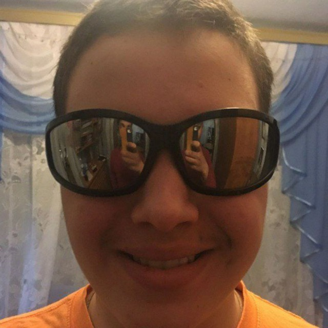

Мини-игра "Виселица
Текстовая игра,где нужно угадать слово прежде чем рисунок виселицы будет завершен


Привет! Я создаю современные и удобные веб-сайты.
Текстовая игра,где нужно угадать слово прежде чем рисунок виселицы будет завершен
Сайт для чтения. выполнен на fron с имитацией backend
Начал изучать программирование в 2023 году. С тех пор увлекаюсь им и сегодня.
Специализируюсь на фронтенд-разработке, но также, интересуюсь бекендом и микроэлектронникой.